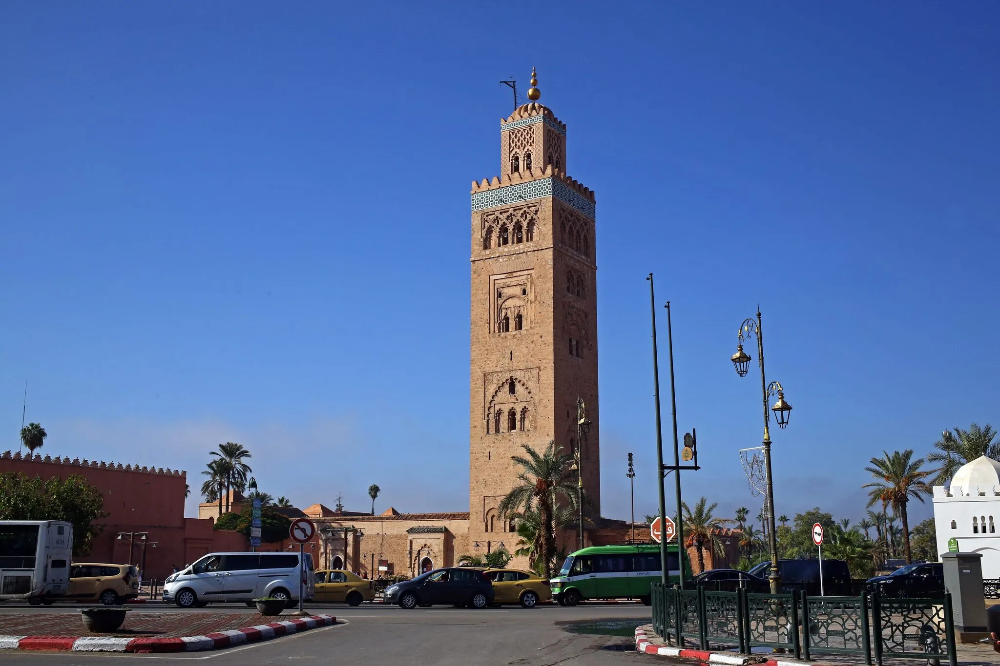
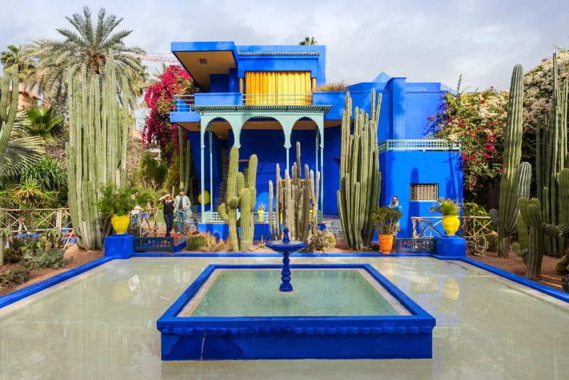
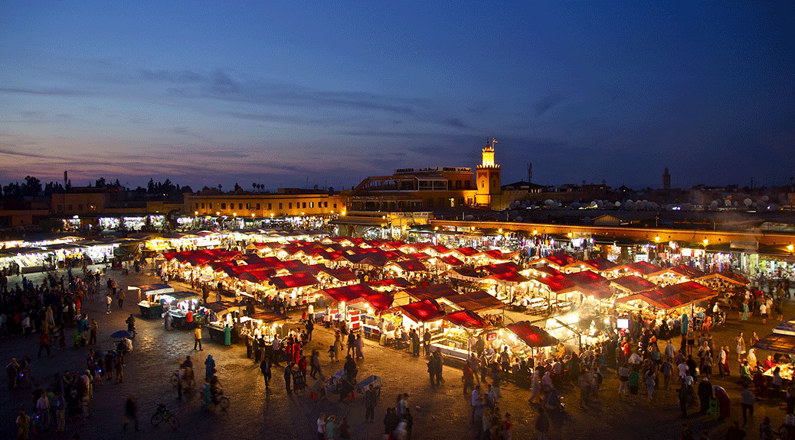
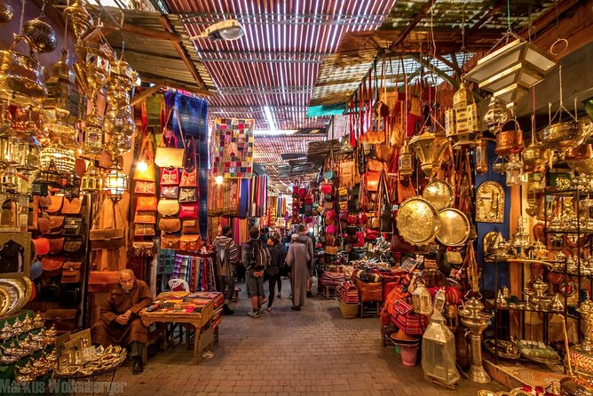
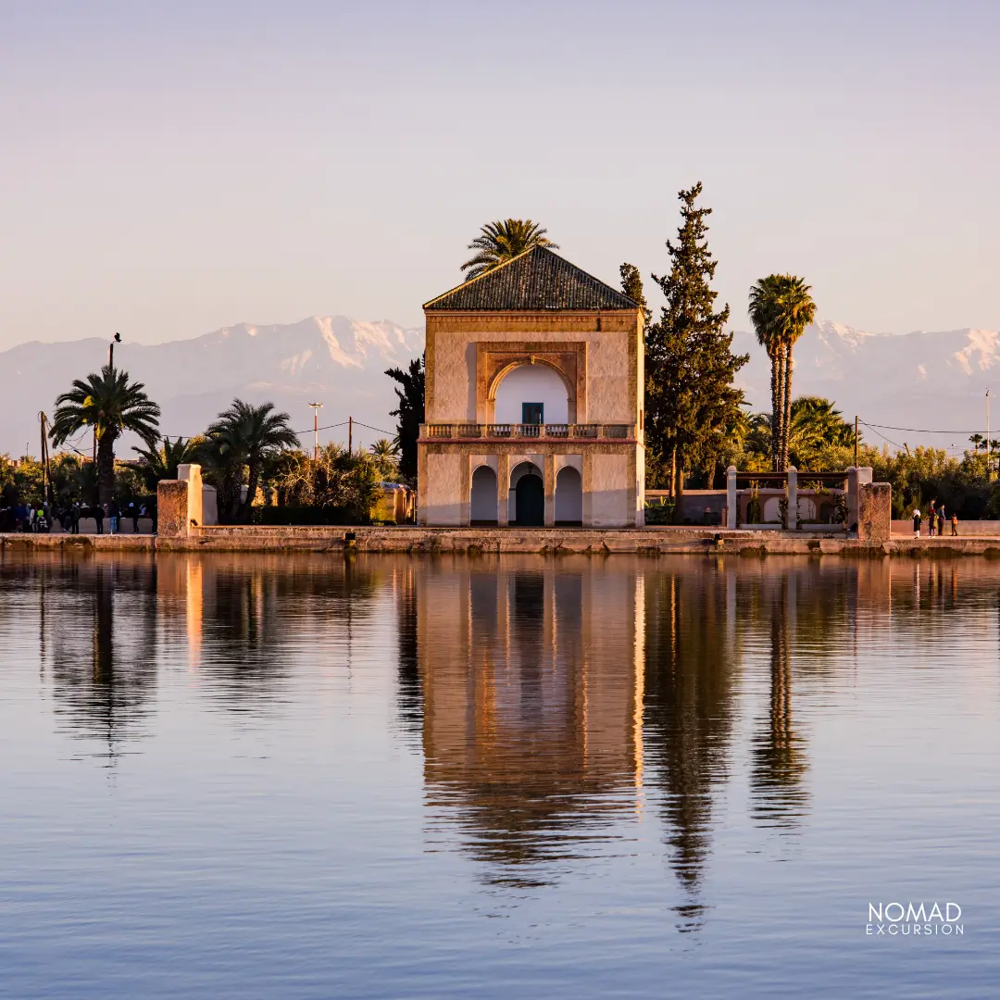
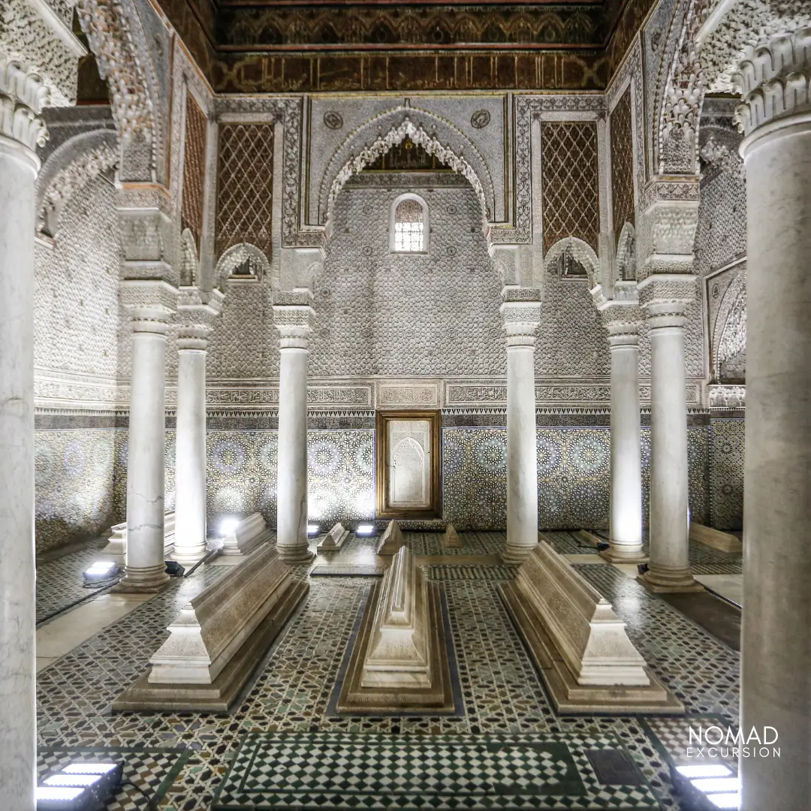

À propos de Marrakech
Marrakech, surnommée la "ville rouge", est une des destinations les plus célèbres du Maroc. Sa Médina, ses remparts, ses jardins et son architecture unique en font un lieu incontournable.
Faits rapides
- Population: ~1M
- Région: Marrakech-Safi
- Langues: Arabe, Français
- Climat: Semi-aride, étés chauds et hivers doux
Culture
Marrakech possède une culture riche mêlant traditions marocaines et influence artistique contemporaine. La ville est célèbre pour ses souks, ses festivals, ses musiciens et ses artisans. Les jardins, riads et palais reflètent l'élégance architecturale marocaine.
Mention spéciale: la gastronomie marrakchie marie plats traditionnels et influences modernes.
Artisanat
Souks et ateliers traditionnels.
Musique & Festivals
Gnaoua, musique populaire et festivals internationaux.
Jardins
Jardins Majorelle, Menara et autres espaces verts.
Cuisine
Spécialités locales et marchés gastronomiques.
Sites incontournables

Mosquée Koutoubia
Grande mosquée emblématique et repère architectural de Marrakech.

Jardins Majorelle
Jardin botanique luxuriant, célèbre pour ses couleurs et collection de plantes.

Palais de la Bahia
Chef-d'œuvre architectural du XIXᵉ siècle avec magnifiques jardins et patios.

Place Jemaa el-Fna
Place animée avec spectacles, marchands et restaurants typiques.

Les Souks de la Médina
Labyrinthe d’artisanat, textiles, bijoux et objets traditionnels. Expérience authentique de la culture marocaine.

Jardin de la Menara
Grand jardin historique avec bassin central, oliveraies et vue sur l’Atlas.
.jpg)
Musée de Marrakech
Palais rénové avec expositions d’art marocain traditionnel, calligraphie, poterie et costumes.

Saadian Tombs
Tombeaux historiques du XVIᵉ siècle, célèbres pour leurs décorations raffinées et mosaïques.

Palais El Badi
Palais en ruines impressionnant, témoin de la grandeur passée, souvent utilisé pour événements et festivals.